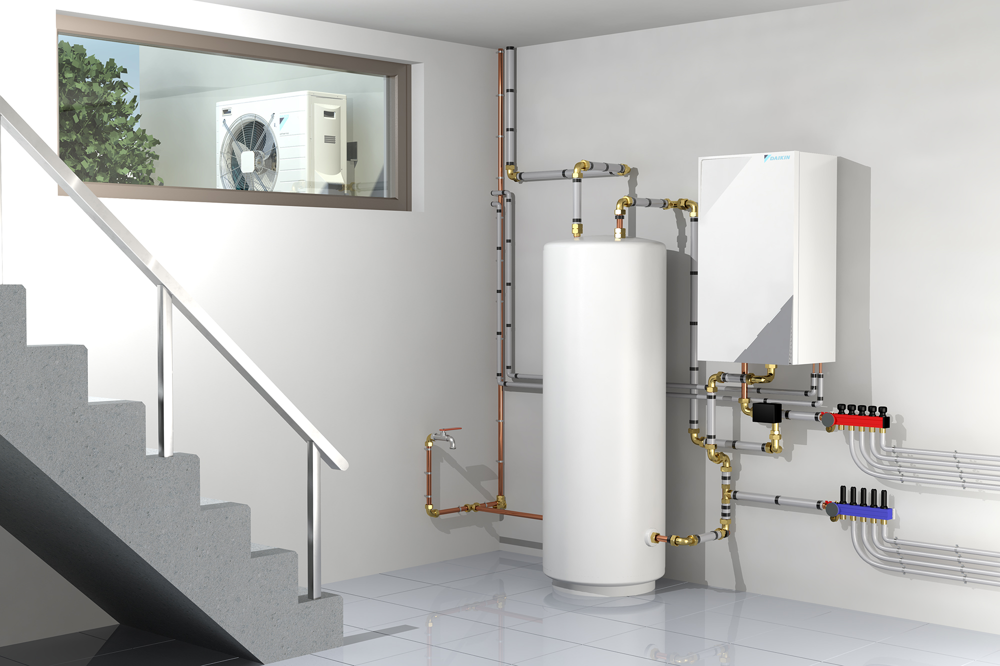

Duurzaam verwarmen met een warmtepomp
Een warmtepomp haalt warmte uit de buitenlucht en gebruikt die om uw woning op een milieuvriendelijke en energiezuinige manier te verwarmen. Zo daalt uw energiefactuur én uw CO₂-uitstoot.
JS Klimaattechnieken is gespecialiseerd in zowel lucht-lucht als lucht-water warmtepompen. Wij analyseren uw situatie en bieden een oplossing op maat, perfect afgestemd op uw verbruik en woningtype.
Wij staan klaar voor een professionele plaatsing én een volledige service na installatie. Kies voor comfort, rendement en toekomstgerichte technologie.
Neem contact op voor een vrijblijvend adviesgesprek.